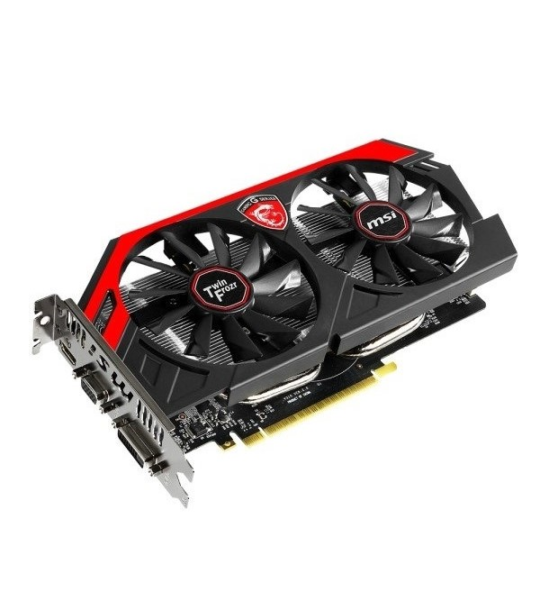
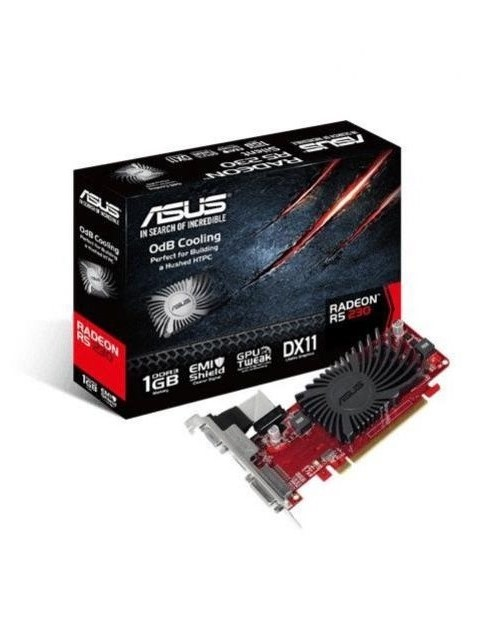
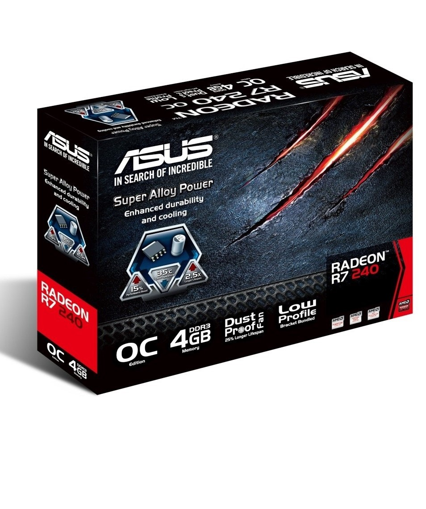
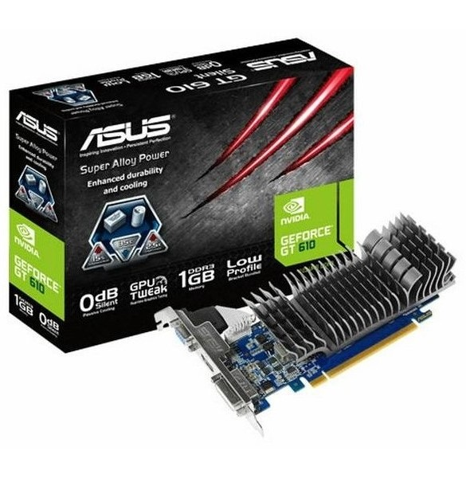
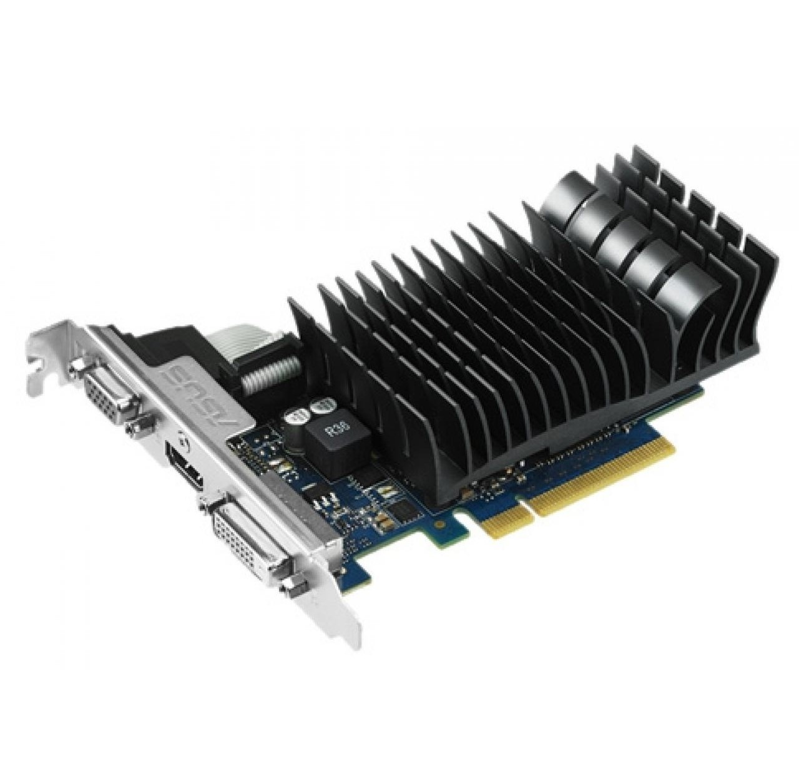
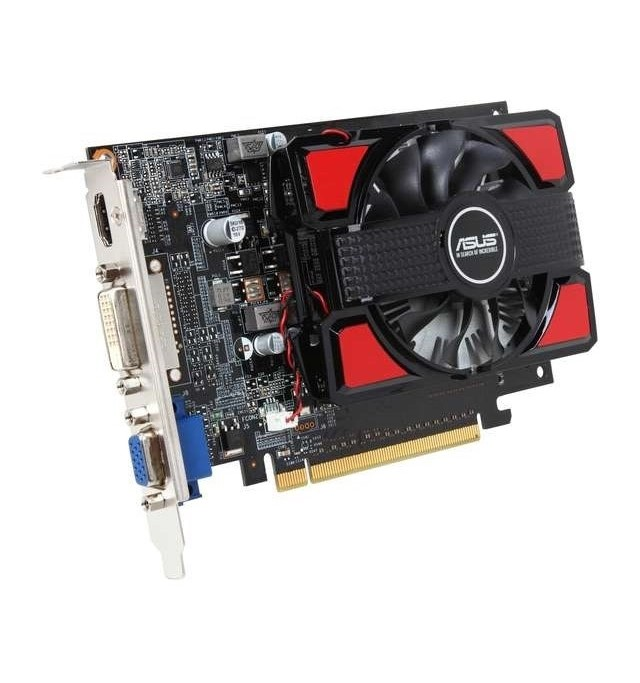
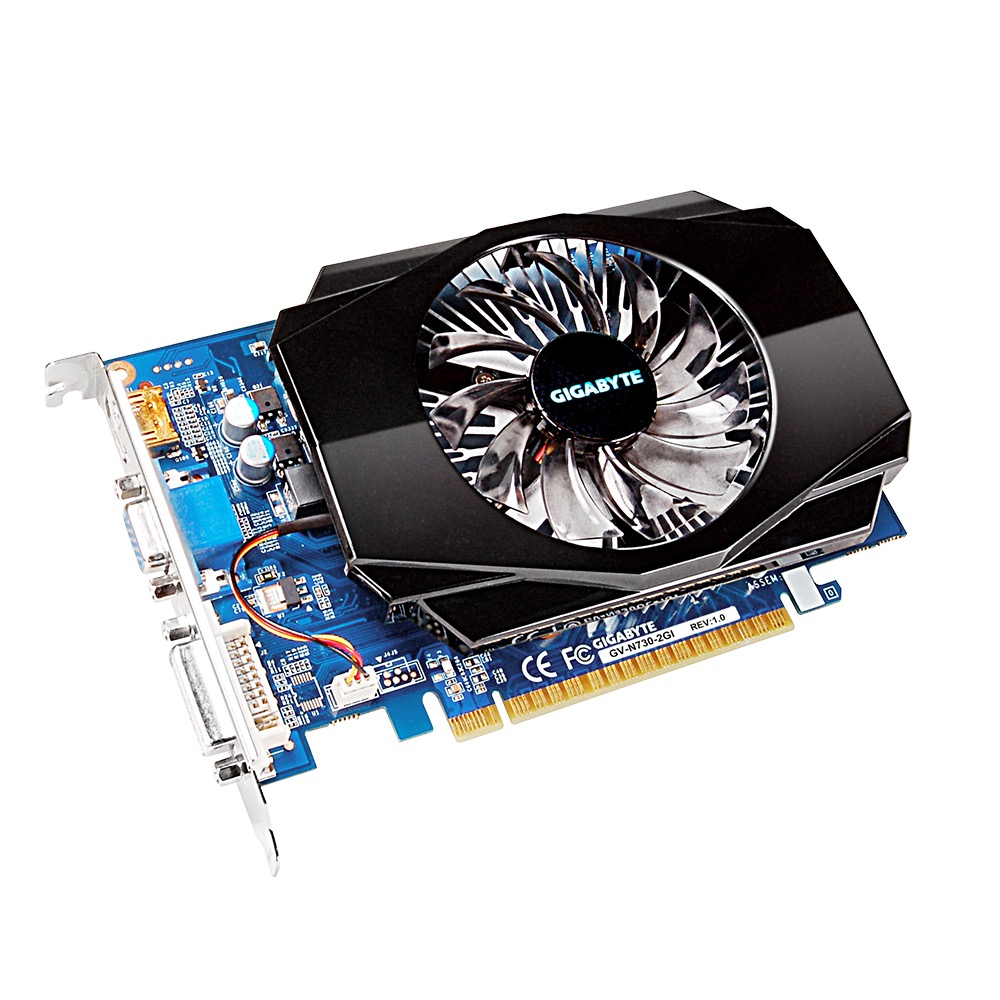
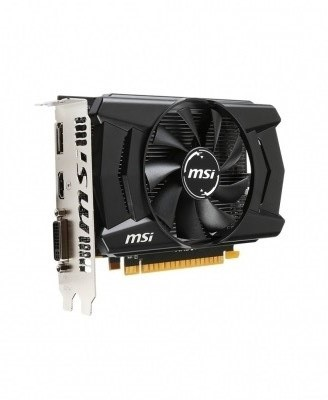
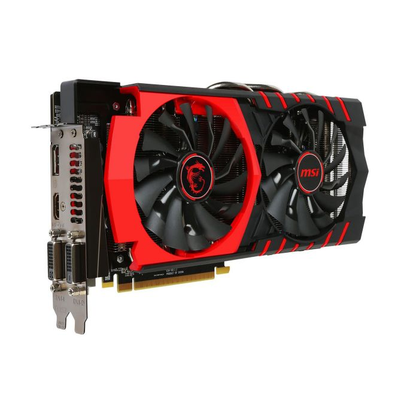
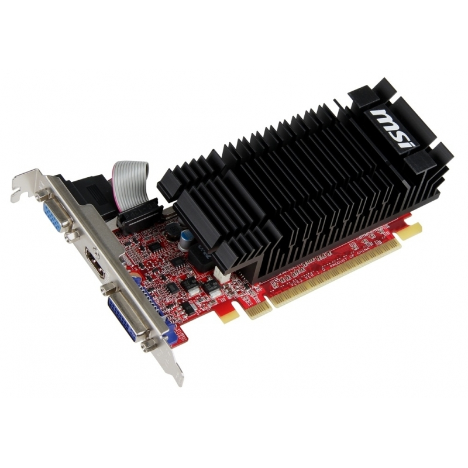

Видеокарты

MSI GeForce GTX750Ti
9400 руб
(N750TI-2GD5/OCV1) (GM107/28) (1059/5400) GDDR5 2048MB 128-bit, PCI-E16x (3.0), DirectX 11.2, OpenGL 4.4. Количество поддерживаемых мониторов – 2. (DVI, поддержка HDCP, HDMI, VGA) (912-V809-1432)

ASUS ATi Radeon R5 230
2500 руб
(Caicos/40nm) (625/1200) GDDR3 1024Mb 64-bit, PCI-E16x 3.0, DirectX 11, OpenGL 4.2. Количество поддерживаемых мониторов – 2. (DVI, поддержка HDCP, HDMI, VGA ) Retail ( R5230-SL-1GD3-L )

ASUS ATi Radeon R7 240
3320 руб
(Oland Pro/28nm) (600/1600) GDDR3 1024Mb 64-bit, PCI-E16x 3.0, DirectX 11, OpenGL 4.3. (DVI, поддержка HDCP, HDMI, VGA ) Retail (R7240-1GD3 )

ASUS GeForce GT610 SILENT
2300 руб
Low Profile (810/1200) GDDR3 1024MB 64-bit, PCI-E16x 3.0, ( DVI, поддержка HDCP, HDMI, VGA ) ( GT610-SL-1GD3-L )

ASUS GeForce GT720
2890 руб
(GK208/28nm) (797/1600) Low Profile GDDR3 1024MB 64-bit, PCI-E16x 3.0, TDP 19W. Количество поддерживаемых мониторов – 3. DirectX 12, OpenGL 4.4 (DVI, поддержка HDCP, HDMI, VGA) (GT720-SL-1GD3-BRK )

ASUS GeForce GT740
5560 руб
(GK107/28nm) (993/1782) GDDR3 2048MB 128-bit, PCI-E16x 3.0, Количество поддерживаемых мониторов – 2. DirectX 12, OpenGL 4.4 (DVI, поддержка HDCP, HDMI, VGA) ( GT740-2GD3 )

GIGABYTE GeForce GT730
4200 руб
(GV-N730D5-2GI) (GK107/28nm) (902/5000) GDDR5 2048MB 64-bit, PCI-E16x 3.0, Количество поддерживаемых мониторов – 3. DirectX 12, OpenGL 4.4 (DVI, поддержка HDCP, HDMI, VGA) (GV-N730D5-2GI)

MSI ATi Radeon R7 360
6500 руб
(R7 360 2GD5 OCV1) (Tobago PRO/28nm) (1100/6000) GDDR5 2048Mb 128-bit, PCI-E16x 3.0, DirectX 12, OpenGL 4.5. Количество поддерживаемых мониторов – 3. Доп. пит. 6-pin. Retail ( R7 360 2GD5 OCV1 )

MSI ATi Radeon R9 380
12780 руб
(R9 380 2GD5T OC) (Antigua PRO/28nm) (980/5500) GDDR5 2048Mb 256-bit, PCI-E16x 3.0, DirectX 12, OpenGL 4.5. Количество поддерживаемых мониторов – 3. Доп. пит. 6-pin + 6-pin. Retail (912-V314-013)

MSI GeForce GT610
2620 руб
(N610-2GD3H/LP) SILENT Low Profile (550/1000) GDDR3 2048MB 64-bit, PCI-E16x 3.0, (DVI, поддержка HDCP, HDMI, VGA ) ( N610-2GD3H/LP )